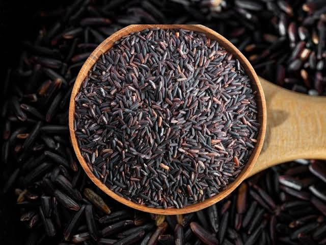
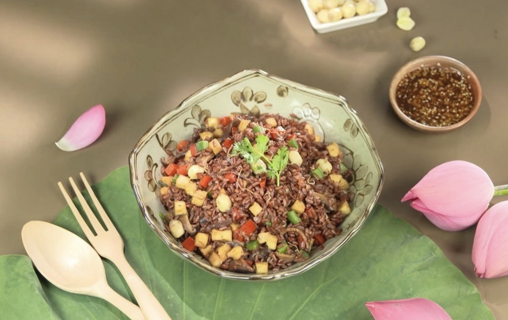
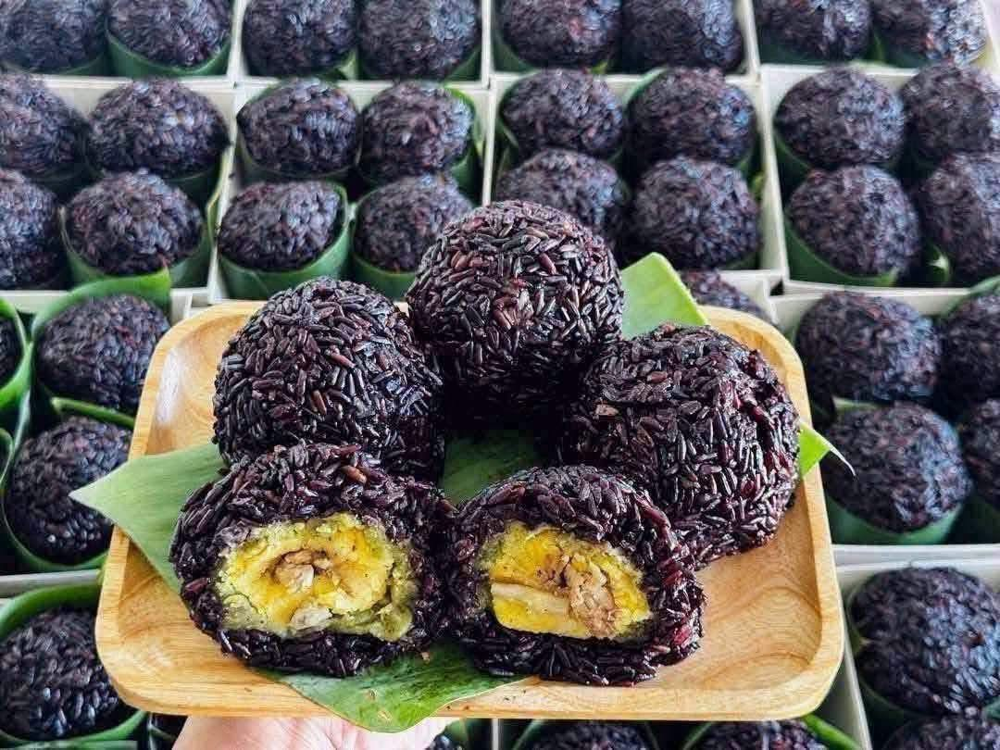
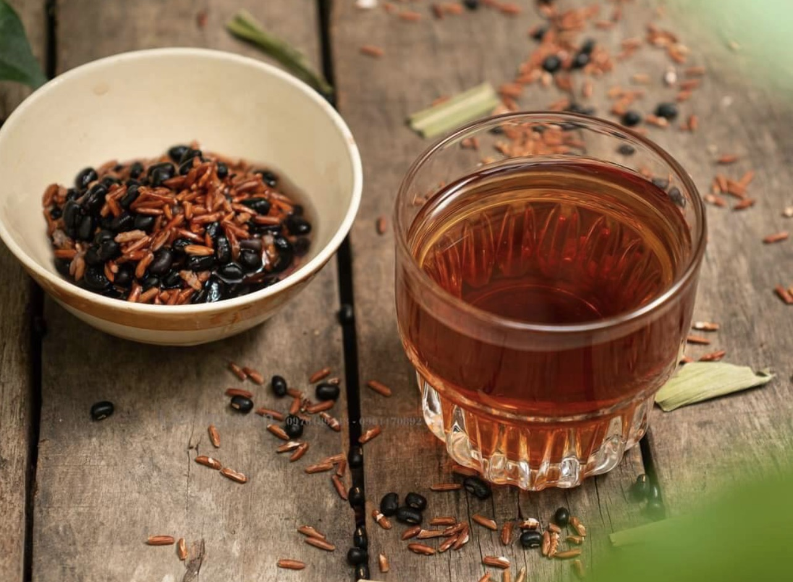
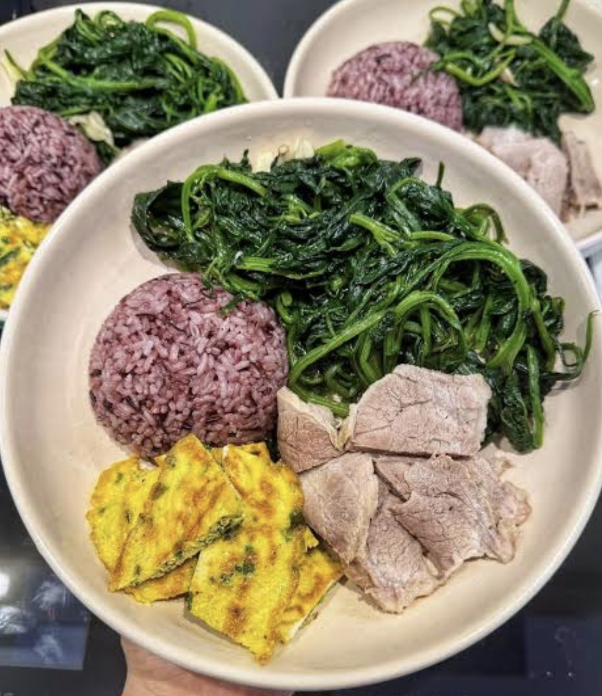
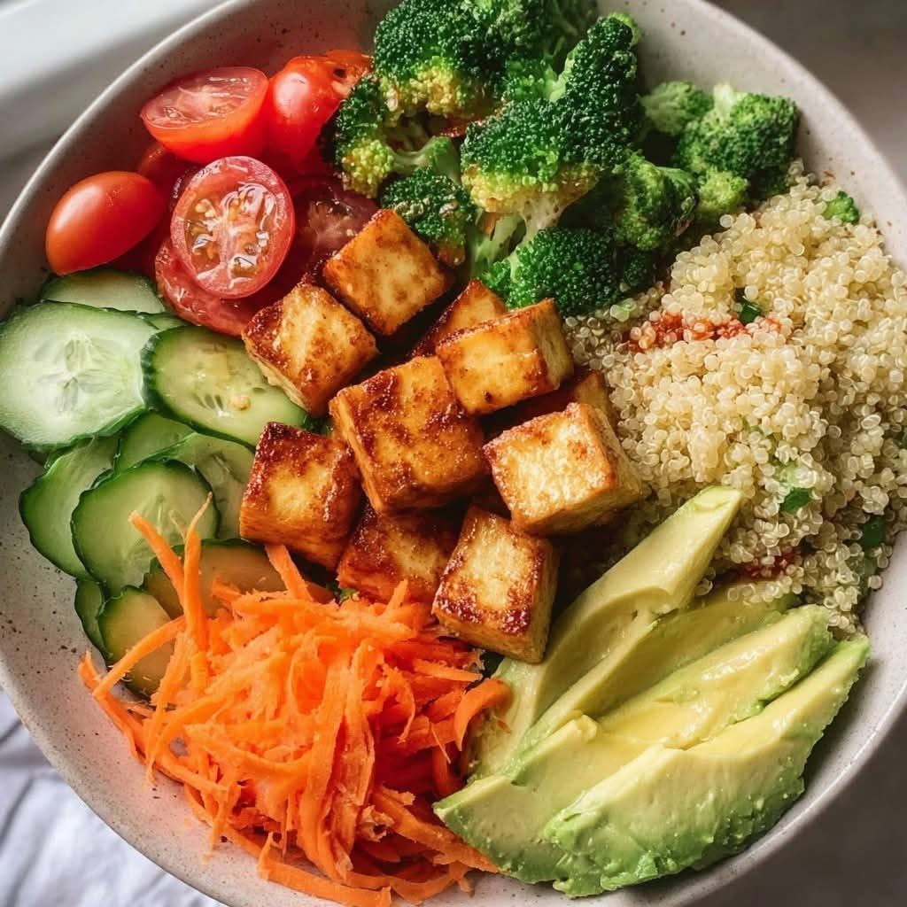
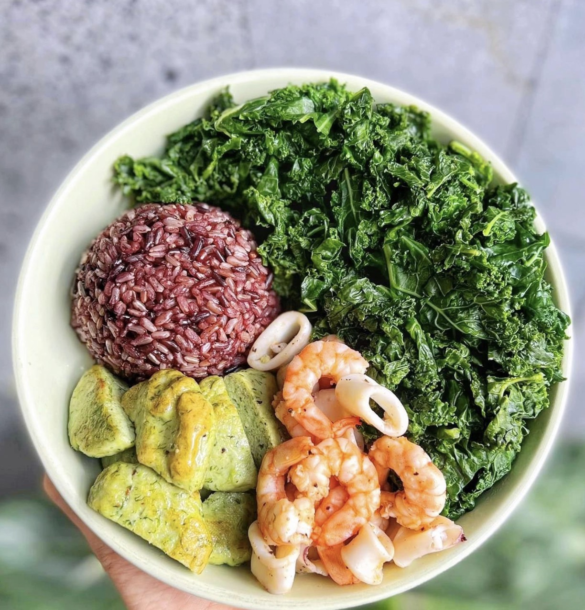
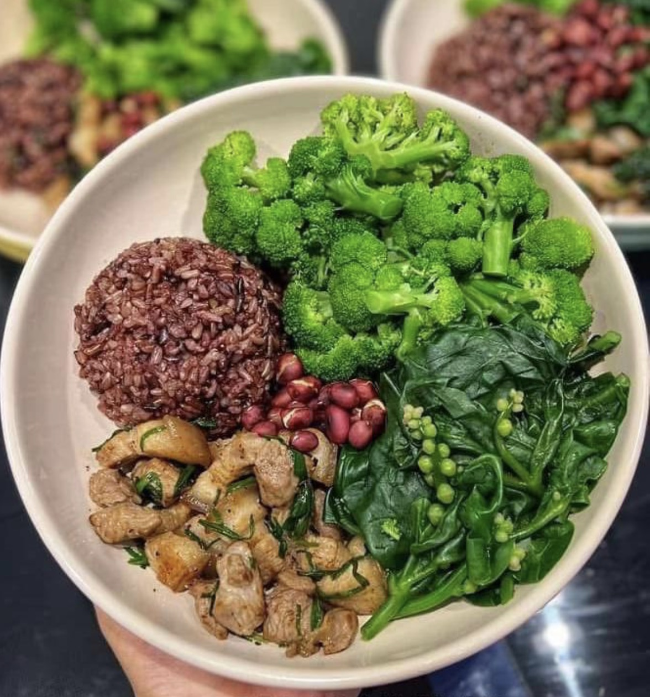

Gạo Lứt — Giá Trị Dinh Dưỡng & Thực Dưỡng

Các Nghiên Cứu Về Giá Trị Dinh Dưỡng Của Gạo Lứt
Theo Mir SA et al. (2020): Gạo lứt là loại gạo nguyên hạt bao gồm nội nhũ, phôi và lớp cám. Về mặt dinh dưỡng, gạo lứt vượt trội hơn gạo trắng và là nguồn cung cấp vitamin, khoáng chất, chất xơ, γ-oryzanol và các thành phần phytochemical tốt hơn, có thể hỗ trợ sức khỏe con người.
Theo Carcea M. (2021): Gạo lứt bao gồm lớp cám (6–7% tổng trọng lượng), phôi (2–3%) và nội nhũ (khoảng 90%). Nó là một loại ngũ cốc nguyên hạt và do đó, được biết là có tác dụng có lợi cho sức khỏe con người. Tuy nhiên, gạo lứt ăn được hiếm khi được tiêu thụ vì hầu hết người dân thích gạo trắng xay xát hơn vì những lý do liên quan đến hình thức, hương vị, độ ngon miệng, dễ nấu, truyền thống, an toàn, thời hạn sử dụng và thiếu nhận thức về lợi ích và tính sẵn có của nó, điều này hạn chế tiềm năng thị trường. Các báo cáo khoa học mới nhất về thành phần dinh dưỡng của gạo lứt và sự phát triển của công nghệ sản xuất cũng ghi nhận nhiều tác động tích cực của việc tiêu thụ gạo lứt đối với sức khỏe con người.
Bảng Thành Phần Dinh Dưỡng Của Gạo Lứt
| Chất dinh dưỡng | Gạo lứt |
|---|---|
| Nước (g) | 12.0 |
| Năng lượng (Kcal) | 341 |
| Protein (g) | 7.5 |
| Chất béo (g) | 1.9 |
| Lượng carbohydrate có sẵn (g) | 77.4 |
| Tinh bột (g) | 69.2 |
| Carbohydrate hòa tan (g) | 1.2 |
| Tổng lượng chất xơ trong chế độ ăn (g) | 1.9 |
| Chất xơ hòa tan (g) | 0.12 |
| Chất xơ không hòa tan (g) | 1.8 |
| Khoáng chất | |
| Natri (mg) | 9 |
| Kali (mg) | 214 |
| Canxi (mg) | 32 |
| Magie (mg) | 20 |
| Phốt pho (mg) | 221 |
| Sắt (mg) | 1.6 |
| Vitamin | |
| Thiamine (mg) | 0.48 |
| Riboflavin (mg) | 0.05 |
| Niacin (mg) | 4.7 |
| Vitamin C (mg) | 0.0 |
| Lượng tương đương retinol của Vitamin A (μg) | 0.0 |
| Vitamin E (mg) | 0.7 |
Thực Dưỡng Gạo Lứt — Các Món Ăn Từ Gạo Lứt




Những Thực Phẩm Kết Hợp Với Gạo Lứt




Lá Sen — Giá Trị Dinh Dưỡng & Thực Dưỡng
Các Nghiên Cứu Về Giá Trị Dinh Dưỡng Của Lá Sen
Theo Bác sĩ Thập Nữ Ngọc Huyền: Lá sen chứa nhiều hợp chất thực vật, trong đó có alkaloid, flavonoid và các hợp chất phenolic. Một số nghiên cứu đã xác định nhiều flavonoid và alkaloid trong chiết xuất lá sen, bao gồm quercetin và các alkaloid đặc trưng như nuciferine.
Bảng Thành Phần Dinh Dưỡng Của Lá Sen
| Chất dinh dưỡng | Lá sen |
|---|---|
| Calo | 70 kcal |
| Kali | 30 mg |
| Natri | 28,5 g |
| Chất béo | 2 g |
| Vitamin A | 10,5% DV |
| Vitamin C | 18,8% DV |
| Canxi | 22,3% DV |
| Sắt | 16,5% DV |
| Vitamin B6 | Chưa có số liệu |
Các Món Ăn Kết Hợp Với Lá Sen